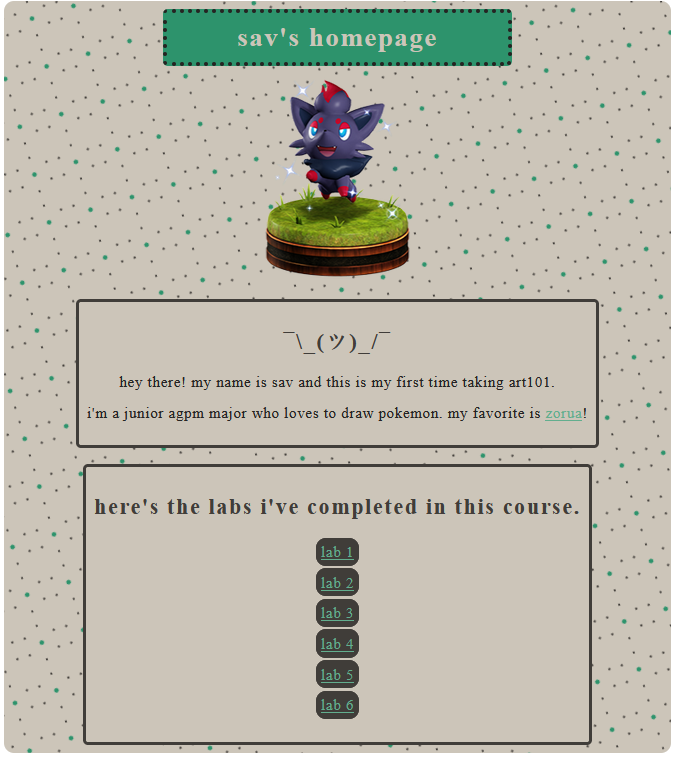
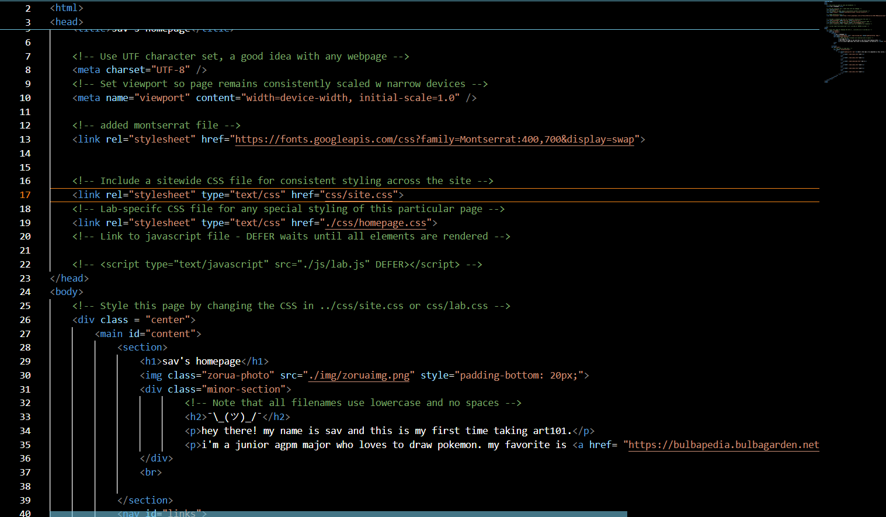

lab 3: file structures
this lab was a hands-on experience to learn about file structures and how to use them.
challenges
my biggest challenge was curbing my perfectionism when it came to the stylization of my website.
results
my results were an aesthetically pleasing website that really demonstrates who i am!
 